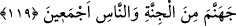

benzeri âyetler, kulun hür seçimi olmasına ters düşmez. Çünkü bu âyetlerde anlatılan
durum, kulun Hak’ta fânî olmasına göredir. Her hâl ü kârda gerçek müessirin Allah
Teâlâ olduğu konusunda söylenecek bir şey yoktur.
Molla Câmî (k.s.) şöyle der:
Hak fâildir, Hak’dan başka ne varsa âlettir
Âletlerin te’sir etmesi ise muhaldir
Gerçek müessir vardır, birdir
Gerisinin cümlesi evhâm ve hayâlâttır
119. Ancak Rabb’inin merhamet ettikleri müstesnâdır. Zâten onları bunun için
yarattı. Rabb’inin: “Andolsun ki cehennemi tümüyle cinlerle ve insanlarla
dolduracağım!” sözü yerini buldu.”
“Ancak Rabb’inin merhamet ettikleri müstesnâdır.” Yalnız Allah’ın fazl u keremi
sâyesinde hakka ilettiği topluluk bu ihtilâfın dışındadır. Onlar hakkın ne olduğu
konusunda ihtilâf etmezler, yani hakka karşı gelmezler. “Zâten onları bunun için” yani
rahmet için “yarattı.” İbn Abbas’ın belirttiği gibi rahmete lâyık olanları rahmet için,
ihtilâfa düşmeye ehil olanları da onun için yaratmıştır.
Mesnevî’de şöyle denilir:
“Halkı benden faydalansınlar diye yarattım.” sözünü
Ey Kayyûm ve dâimâ diri, sen lütfettin.
“Ben faydalanayım diye değil” sözü, senin cömertliğindir,
Bütün noksanlar, o cömertlikle düzelir, tamamlanır.
Tenperest olan şu kullarını affet!
Af denizinin affetmesi elbette yerindedir, doğrudur.
“Rabbinin: “Andolsun ki cehennemi tümüyle cinler ve insanlarla” onların
isyankârlarıyla yahut sadece insanlarla veya sadece cinlerle değil hepsiyle -ki buna
göre “tümüyle” ifadesi her iki nevideki genelliği pekiştirmiş olur.- “dolduracağım!”
sözü yerini buldu.” Yani Rabbinin meleklere söylediği bu söz ya da böyle bir hüküm
vâcip oldu.
İnsanlar ve cinler/sekaleyn, Allah’ın dininde anlaşmazlığa düşmek için yaratılmıştır.
Onlar Allah’ın nimetlerine nankörlük etmek ve Allah’ın hakkını unutmak özelliğine
sâhiptirler. Bunlar hüküm bakımdan aynıdırlar. İnsanların şakîleri için olan azab,